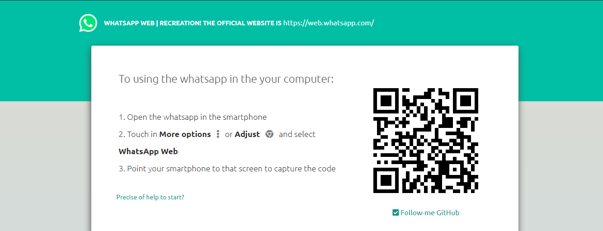
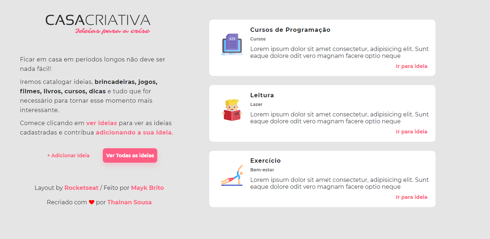
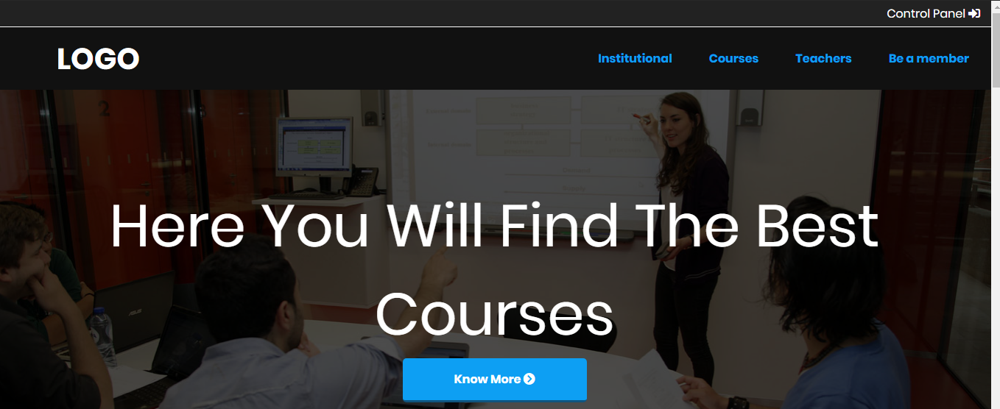

Whatsapp Web Rec.
Navegando pelo whatsappweb, vir que ele era um side ideal para por em prática os conhecimentos do desenvolvimento front-end, tendo em vista que possui muitos detalhes.
Ver projetoLEAD
Este é um exemplo de site institucional, simples, mas que também foi muito bom para por os conhecimentos front end em prática, esse site também é uma recriação de outro já existente.
Ver projeto

Casa Criativa
O casa criativa foi um projeto criado pelo Mayk Brito da Rocketseat, onde esse já possui integração com o back-end, usando node-js, e suas tecnológias, como o express, nunjucks e etc...
Ver projeto

School Website
Este é um exemplo de site de escola, simples, mas que também foi muito bom para por os conhecimentos front end em prática, esse site também tem como base um módelo existente na internet.
Ver projeto